Dans un moteur, il y a plusieurs pièces:
- Le bloc-cylindres/bloc-moteur
Il sert de support à tous les organes principaux, c'est la pièce-maîtresse du moteur, le " châssis " de celui-ci.
Il doit guider le piston, d'où la nécessité de réduire le frottement et d'augmenter la résistance à l'usure.
Il doit laisser circuler le liquide de refroidissement tout en résistant à la corrosion
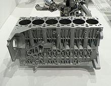 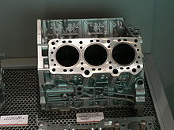
- Les soupapes
C'est un organe mécanique de la distribution à quatre temps permettant l'admission des gaz frais et l'évacuation des gaz brûlés vers l'échappement.
une soupape d'admission sépare le conduit d'admission de la chambre de combustion et une soupape d'échappement sépare celle-ci du conduit d'échappement.
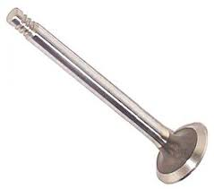 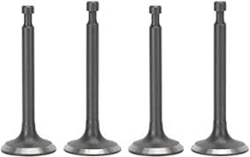
- Les segments de piston
Ils ont pour fonction d'assurer l'étanchéité du piston dans le cylindre.
Les segments contribuent également
à la réfrigération de la tête de piston en assurant le transfert de chaleur vers la chemise réfrigérée.
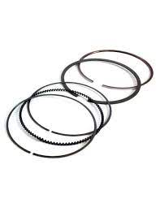 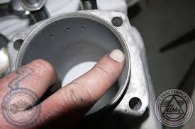
- Le vilebrequin
C'est un arbre grâce auquel le mouvement alternatif de l'ensembe piston-bielle est transformé en mouvement rotatif continu.
C'est la pièce centrale du moteur. Il permet notamment la transmission de l'énergie des cylindres jusqu'à l'arbre de sortie du moteur.
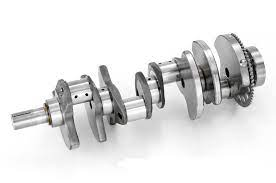 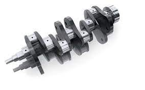
- Les cylindres
Il peut s’agir de 1, 2, 4, 6, 8 ou 16 trou métalliques coulées dans un bloc
Le nombre de cylindres reflète le potentiel qu’un moteur peut avoir, ainsi que le niveau de consommation d’essence.
Dans chacun d’eux, la séquence de quatre temps du moteur est développée, ce qui implique la transformation du carburant en force mécanique nécessaire au mouvement du véhicule.
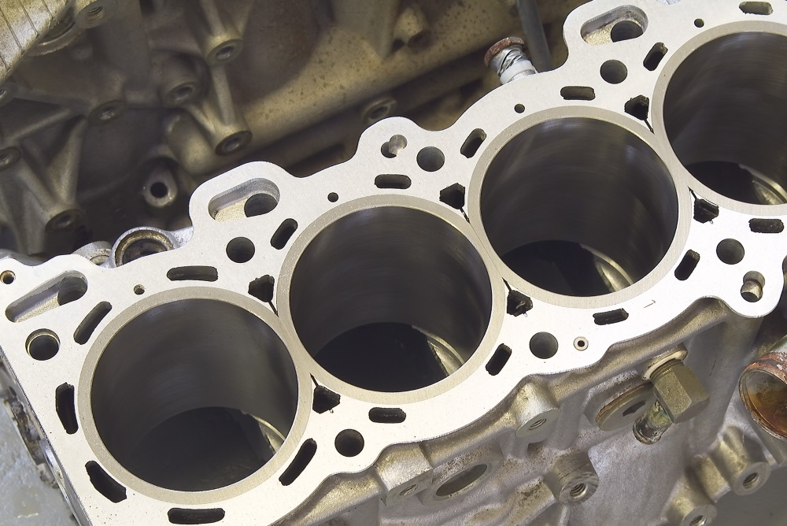 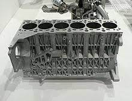
- Les pistons
Ils sont situés à l’intérieur des cylindres et ont une fonction de paroi, car ils empêchent la fuite de carburant et de gaz pendant le processus de transformation des matériaux.
Les pistons sont reliés à deux éléments : la bielle (le bras qui soutient leur mouvement) et le vilebrequin.
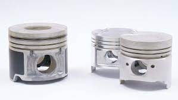

- La culasse
C’est le couvercle supérieur de l’ensemble des cylindres.
C’est là que se trouvent certaines pièces importantes d’un moteur de voiture, comme la soupape d’admission d’air et d’essence et la soupape d’échappement
- Le carter
Il joue le rôle d’un seau ou d’un plateau au fond du moteur.
Il permet de déposer l’huile utilisée pour lubrifier les pièces par le biais d’un réseau de distribution qui entoure le moteur.
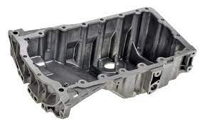 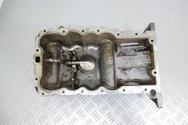
- La bielle
La bielle est l’élément qui relie le piston au vilebrequin.
Les bielles transforment le mouvement alternatif rectiligne des pistons en un mouvement rotatif quasi continu du vilebrequin.
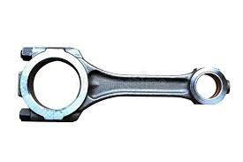 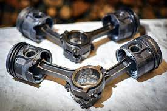